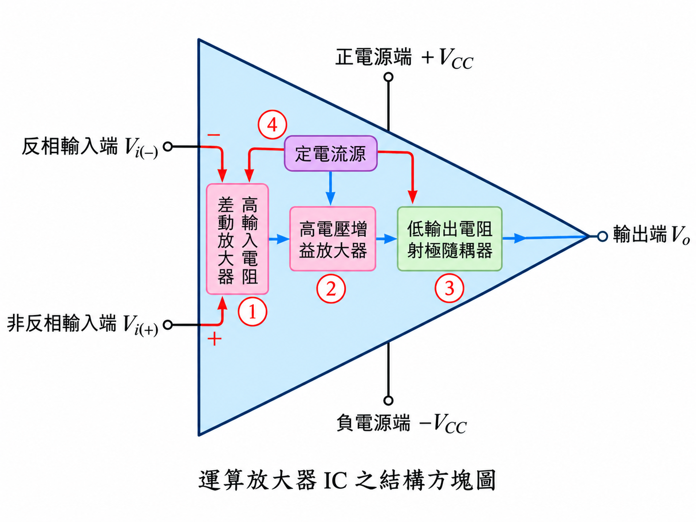
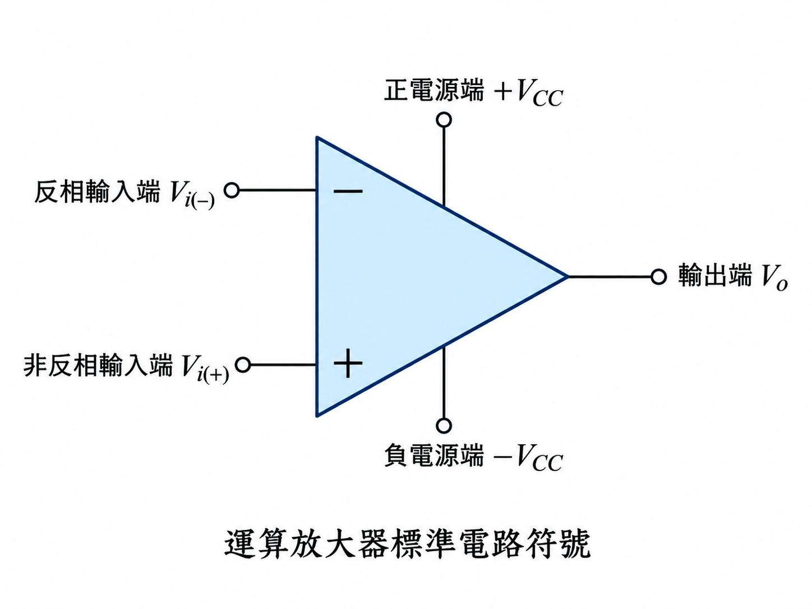

01
運算放大器 IC 的內部基本組成電路
依課本可分成四大部分：
- 具有兩個輸入信號端的高輸入電阻差動放大電路：放大兩輸入端的信號差值，同時抑制兩端共同出現的雜訊；高輸入電阻可減少信號源被負載的影響。
- 高電壓增益放大電路：提供很大的電壓增益，課本指出開迴路電壓增益可大於 105。
- 具有低輸出電阻的射極隨耦放大電路：提供較高電流增益與低輸出電阻，使輸出較不受負載影響。
- 定電流源電路：提供穩定的直流偏壓電流給各級放大電路。

02
運算放大器之電路符號
- 反相輸入端：標示「−」，輸入信號增加時，輸出傾向往相反方向變化。
- 非反相輸入端：標示「＋」，輸入信號增加時，輸出傾向往同方向變化。
- 輸出端：以 Vo 表示。
- 電源端：一般為 +VCC 與 −VCC。

03
理想運算放大器具有下列特性
- 輸入電阻無窮大：Ri = ∞，所以流入輸入端的電流 Ii = 0。
- 輸出電阻為 0：Ro = 0，使輸出電壓理想上不受負載影響。
- 開迴路電壓增益無窮大：Avo = ∞。

04
運算放大器的主要功能特性有二
- 負回授的虛短路（虛接地）功能特性。
- 比較器功能特性。
判斷核心：看到 OPA 題目時，先判斷「有沒有負回授」。有負回授且未飽和，通常走虛短路分析；沒有負回授，通常走比較器分析。
05
放大器的負回授基本觀念
將輸出的一部分回送到反相輸入端，稱為負回授。設回授因數為 β，則：
β = Vi(−) / Vo → Vi(−) = βVo
理想 OPA 的開迴路關係可寫成：
Vo = Avo[Vi(+) − Vi(−)] = Avo[Vi(+) − βVo]
移項整理：
Av = Vo/Vi(+) = Avo/(1 + βAvo) = 1/(1/Avo + β)
當理想 OPA 的 Avo → ∞ 時，1/Avo → 0，因此：
Av ≈ 1/β

06
放大器的負回授虛短路（虛接地）功能特性
- 加入負回授後，反相輸入端電壓會追隨非反相輸入端，因此 Vi(−) ≈ Vi(+)。
- 兩輸入端電壓差近似為 0，因此稱為虛短路；它是「電壓近似相等」，不代表兩端真的以導線短接。
- 因理想 OPA 的輸入電阻 Ri = ∞，所以兩輸入端的輸入電流近似為 0。
- 若非反相輸入端接地，則 Vi(+) = 0，因此 Vi(−) ≈ 0；反相端雖然沒有真正接地，電位卻近似為 0，稱為虛接地。
學生常錯：「虛短」不是 I = ∞，而是 V+ ≈ V−；「輸入端不吸電流」則來自理想 OPA 的 Ri = ∞。
07
比較器的功能特性與重點整理
當理想 OPA 沒有接負回授網路時，可視為比較器。由於 Avo 極大，只要兩輸入端有極小電壓差，輸出就會迅速進入正或負飽和。
| 輸入比較 | 輸出結果 | 判讀 |
|---|---|---|
| V+ > V− | Vo = +Vsat ≈ +VCC | 正飽和 |
| V+ < V− | Vo = −Vsat ≈ −VCC | 負飽和 |

重點：比較器題目不是用 V+ = V−；而是先比較 V+ 與 V− 的大小，再決定輸出為 +Vsat 或 −Vsat。
08
OPA 虛短路之滿足必要條件
依課本，必須同時滿足：
- 開迴路增益 Avo = ∞（理想 OPA 假設）。
- 電路為負回授結構。
- 輸出未飽和：|Vo| < |Vsat|。
若輸出已飽和，就不能再直接使用 V+ ≈ V− 的虛短路條件。
09
運算放大器應用電路：更好懂的「九步解題法」
課本以流程圖呈現。這裡改成學生較容易照著做的固定順序：
先找回授線。
輸出 Vo 有沒有回到「−」端？有的話通常是負回授；沒有則先考慮比較器。
輸出 Vo 有沒有回到「−」端？有的話通常是負回授；沒有則先考慮比較器。
先分類。
負回授 → 進入線性放大分析；無負回授 → 比較 V+、V−。
負回授 → 進入線性放大分析；無負回授 → 比較 V+、V−。
若為負回授，先寫兩大理想條件。
V+ ≈ V−，且 I+ = I− ≈ 0。
V+ ≈ V−，且 I+ = I− ≈ 0。
若「＋」端接地，立刻標出虛接地。
V+ = 0 → V− ≈ 0。
V+ = 0 → V− ≈ 0。
在反相端節點寫 KCL。
因 OPA 輸入端不吸電流，流入節點的電流總和 = 流出節點的電流總和。
因 OPA 輸入端不吸電流，流入節點的電流總和 = 流出節點的電流總和。
代入電阻電流公式。
每一支路用 I=(V左−V右)/R，注意電流方向與正負號。
每一支路用 I=(V左−V右)/R，注意電流方向與正負號。
解出 Vo 或閉迴路增益。
整理成題目要的 Vo、Av 或未知電阻。
整理成題目要的 Vo、Av 或未知電阻。
做飽和檢查。
確認 |Vo| 是否小於 |Vsat|；若超過，實際輸出只能停在飽和值。
確認 |Vo| 是否小於 |Vsat|；若超過，實際輸出只能停在飽和值。
最後做合理性檢查。
反相放大器輸出應反相；非反相放大器輸出同相；比較器則只看高、低飽和。
反相放大器輸出應反相；非反相放大器輸出同相；比較器則只看高、低飽和。
一句口訣：「找回授 → 判模式 → 寫虛短 → 寫零電流 → KCL → 求輸出 → 查飽和」。
10
10-2 運算放大器的特性及參數
1. 實際與理想運算放大器比較
以下保留課本表 10-1 的重點，但依需求移除 μA741 欄位，以及「輸出短路電流 Ios」那一列。
| 特性參數 | 理想 OPA |
|---|---|
| 輸入電阻 Ri | ∞ |
| 輸入偏壓電流 Iib | 0 |
| 輸入抵補電流 Iio | 0 |
| 輸入抵補電壓 Vio | 0 |
| 輸出電阻 Ro | 0 |
| 開迴路電壓增益 Avo | ∞ |
| 共模拒斥比 CMRR | ∞ |
| 增益頻寬乘積 GBP | ∞ |
| 變動率 SR | ∞ |
2. 輸入偏壓電流（input bias current）：Iib
輸入偏壓電流是指 OPA 兩個輸入端所需直流偏壓電流的平均值。理想 OPA 的輸入阻抗無窮大，因此理想值為 0。
Iib = (Iib1 + Iib2) / 2
3. 輸入抵補電流（input offset current）：Iio
輸入抵補電流是兩個輸入端偏壓電流之差的絕對值，用來描述兩輸入端電流不平衡的程度；理想值為 0。
Iio = |Iib1 − Iib2|
4. 輸入抵補電壓（input offset voltage）：Vio
當兩輸入端理論上應等電位時，實際 OPA 因內部元件不完全對稱，可能需要在輸入端施加一個微小差動電壓，使輸出回到 0 V。這個等效差動電壓就是輸入抵補電壓。
Vio = |Vi(+) − Vi(−)|
補充：μA741 可藉由第 1、5 腳調整其輸入抵補電壓，使輸出在無輸入時更接近 0 V。
5. 共模拒斥比（Common-Mode Rejection Ratio, CMRR）
OPA 主要希望放大兩輸入端的「差值」，而抑制同時出現在兩輸入端的「共模信號」。因此 CMRR 越大，表示 OPA 越能抑制共模雜訊。
差模信號：Vd = Vi1 − Vi2
共模信號：Vc = (Vi1 + Vi2) / 2
輸出電壓：Vo = AdVd + AcVc
CMRR = |Ad / Ac|
CMRR(dB) = 20 log10|Ad / Ac|
理想情況：Ad = ∞、Ac = 0，因此 CMRR = ∞。
6. 增益頻寬乘積（gain-bandwidth product, GBP）
OPA 的開迴路增益會隨頻率上升而下降；在一定範圍內，增益與頻寬的乘積近似為常數。
GBP = Av × BW
因此在同一顆 OPA 中，若閉迴路增益設得越大，可用頻寬通常越小；反之增益越小，可用頻寬通常越大。
7. 變動率（Slew Rate, SR）
變動率是輸出電壓每單位時間所能改變的最大速率，用來描述 OPA 對快速變化信號的追隨能力。
SR = ΔVo / Δt 或 SR = dVo/dt
常用單位為 V/μs。若輸入變化速度超過 OPA 的 SR 限制，輸出波形可能失真。
11
章節題庫
第 10 章 10-1 基礎題庫15 題，含基本觀念、負回授、虛短路、比較器與簡易計算，附答案與解析。
第 10 章 10-2 特性及參數題庫20 題，涵蓋 Iib、Iio、Vio、CMRR、GBP、SR 與理想 OPA 特性。